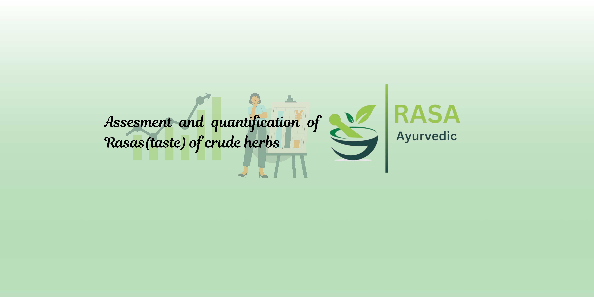
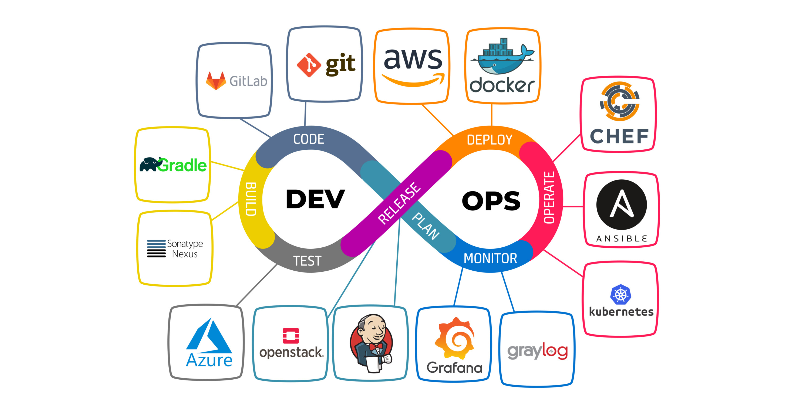

Programming
Python
SQL
C++
core JAVA
Software Engineer based in Pune, India
Building scalable solutions through Cloud, Automation, and Data-Driven Decision Making.
I am a Software Engineer passionate about Cloud, DevOps, Automation, and solving real-world business problems through technology. Currently building expertise in Linux, Docker, Kubernetes, AWS, and CI/CD while helping businesses make data-driven decisions.
About Me
I am Shajahan Sayyed, a Software Engineer with hands-on experience across data analytics, dashboard development, Python, SQL, and business reporting. My work focuses on turning raw information into clear systems, useful insights, and decisions that teams can act on.
I am actively transitioning into Cloud and DevOps Engineering by building strong fundamentals in Linux, Docker, Kubernetes, AWS, CI/CD, Terraform, and infrastructure automation. I enjoy learning by building labs, improving workflows, and connecting engineering decisions to real-world business outcomes.
Alongside my engineering journey, I am growing as an aspiring freelancer. I bring a growth mindset, problem-solving discipline, and a practical focus on delivering work that is clean, reliable, and useful.
Skills
Current Focus
Projects

Problem: Ayurvedic herb classification needs accurate comparison of rasa characteristics.
Solution: Built a Streamlit application using KNN, SVM, and Tanimoto similarity to predict primary and secondary rasas.
Impact: Delivered a practical prediction tool with reported 97% accuracy for herb analysis workflows.
Technologies: Python, Streamlit, Machine Learning, KNN, SVM
View Project
Problem: Sales data needed a clean performance view for revenue, profit, orders, discounts, customers, and regional trends.
Solution: Built an interactive Power BI dashboard with KPI overview pages, advanced filtering, DAX measures, data modeling, and drill-through reporting.
Impact: Helped convert sales data into actionable insights for smarter decisions, performance tracking, and business reporting.
Technologies: Power BI, Power Query, DAX, Data Modeling, Data Visualization
View Dashboard
Problem: Clothing sales data needed a clear view of trends, products, and location performance.
Solution: Developed a Power BI dashboard for sales trend analysis and product performance tracking.
Impact: Helped business users understand sales movement and identify stronger decision points.
Technologies: Power BI, Business Reporting, Dashboard Development
View Dashboard
Problem: Cloud and DevOps skills require practical, repeatable environments beyond theory.
Solution: Hands-on environment for Linux, Docker, Kubernetes, AWS, Terraform, and CI/CD experimentation while building real-world DevOps expertise.
Impact: Strengthens production-minded thinking around deployment, automation, infrastructure, and reliability.
Technologies: Linux, Docker, Kubernetes, AWS, Terraform, CI/CD
How I Can Help
Interactive dashboards that make performance, operations, and trends easier to track.
Clean analysis that turns business data into clear insights and next steps.
Structured reports for recurring decisions, stakeholder updates, and performance reviews.
Visual storytelling for complex data using focused charts, metrics, and dashboards.
Workflow improvements using scripts, tools, and repeatable systems that reduce manual effort.
Contact
I am open to Software Engineering, DevOps, Cloud, Data Analytics, and Freelancing opportunities.